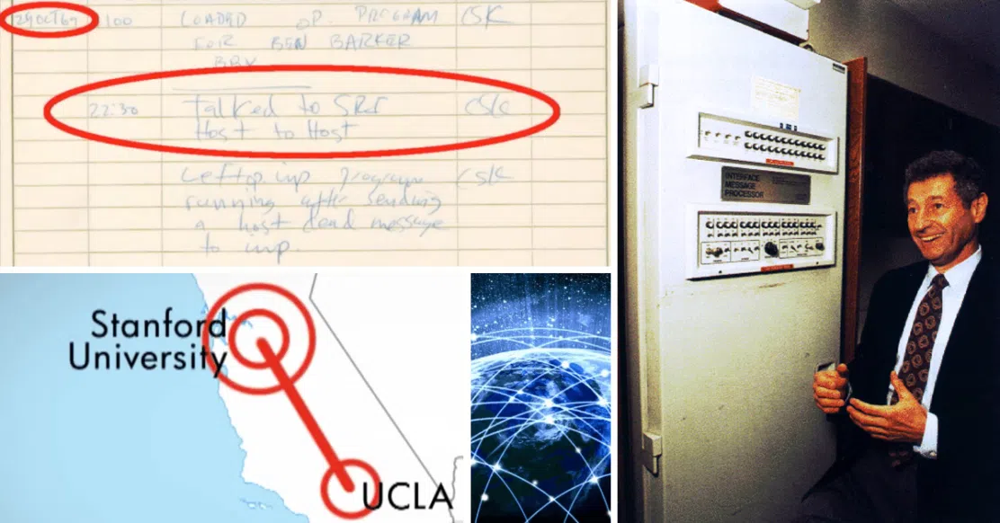
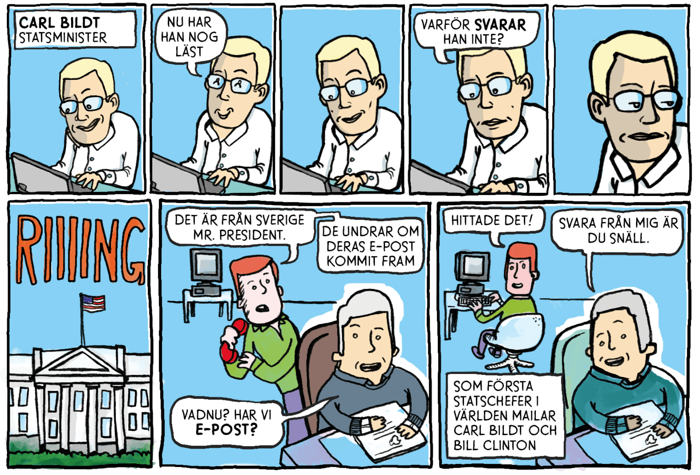
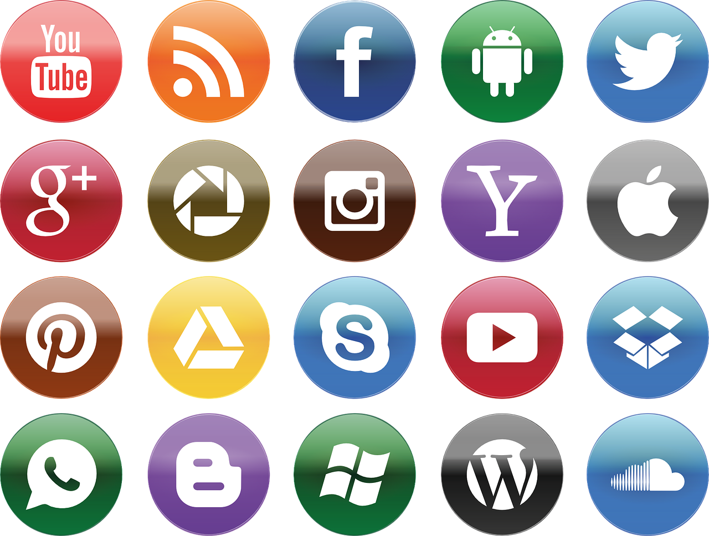
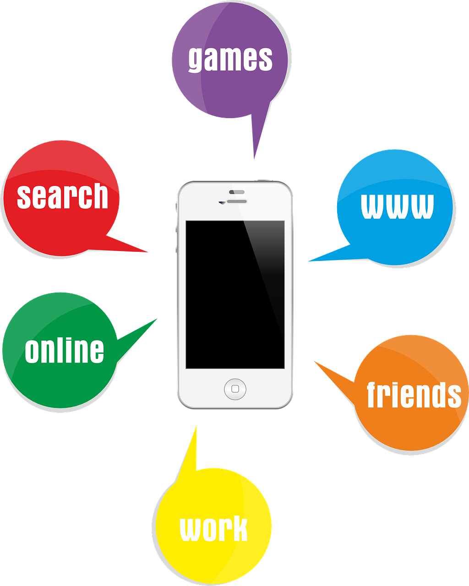
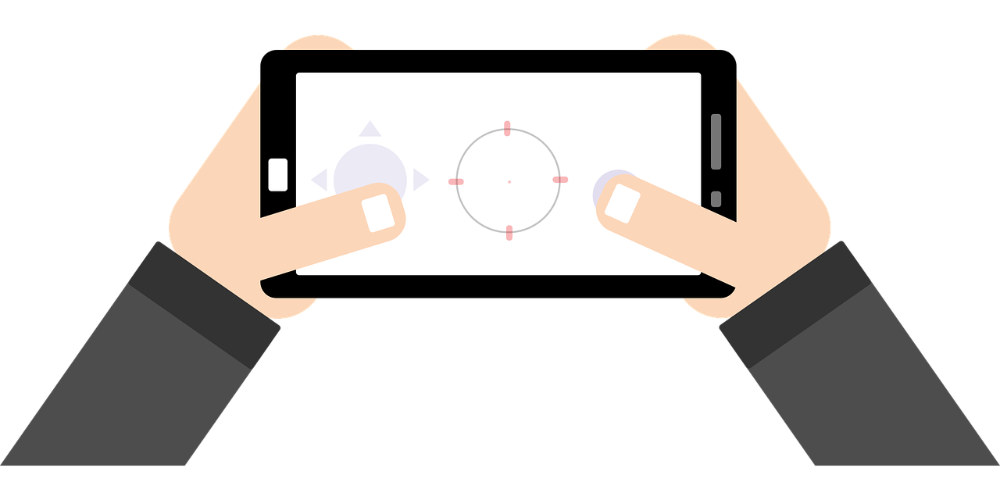

Internets tekniska utveckling
Den första kommunikationen
Allt började med ett L och ett O
Året var 1969 när en dator på Universitetet UCLA i Kalifornien gör ett misslyckat försök att skicka iväg kommandot "LOGIN". Redan efter två bokstäver (L och O) kraschar mottagardatorn. Detta räknas dock som den första kommunikationen mellan två enheter.
Arpnet
Arpnet är ett närverk, det vill säga föregångaren till dagens internet. Arpnets födelse sker på en Amerikans försvarsmynidhet vid namn ARPA. Det var här hela idén till internet formulerades år 1963. Under större delen av 60-talet utvecklas Arpnet och år 1969 länkas nätet med en specialbyggt maskin, IMP - Interface Message Processor. Bara några veckor senare utförs det första försöket av en forskargrupp PÅ UCLA Universitet att skicka ett medellande till en annan dator på Standford ca 50 mil bort. Det ursprungliga medellandet var "LOGIN" men allt som kom fram var bokstäverna L och O.
Det första mejlet skickas
År 1971 skickas det första mejlet iväg över Arpnet - mellan två datorer som stod bredvid varandra. Efter detta kopplas allt fler datorer på forskningsanstaler och laboratorium upp i USA. 1973 är totalt fyrtio datorer uppkopplade mot nätet. Samma år blir Arpnet internationellt då den första datorn utanför USA kopplas upp. Denna dator befanns sig på norsk mark och kopplades upp via satelit. Drygt en månad senare får även Storbritannien uppkoppling. Nätet växer! (Fun fact: kontakten mellan USA och Norge går via Bohuslän, som tar emot signalen och skickar den vidare. Så egentligen är den första internationella kontakten i Sverige)
TCP/IP
Det finns delade meningar när det kommer till internets födelse. Vissa påstår att internet föddes 1 Januari 1983, då Arpnet går över till TCP/IP. Vilket är ett mer flexibelt protokoll, än det tvåvägsprotokollet (NCP) som användes innan. TCP/IP uppfanns av Robert Kahn och Vint Cerf.TCP/IP är det vi använder oss av än idag. Varje enhet får en unik IP adress, men det finns inget som försäkrar att meddelanden kommer fram till mottagaren.
När kom internet till Sverige?
År 1984 får Sverige internet för första gången. Ulf Bilting var den första i Sverige att koppla upp sig mot Arpnet med den första Svenska IP adressen 192.5.50.0. Det var även Ulf som bokade den Svenska domänen .se.

Det skulle dröja ända till 1989 innan World Wide Webb, WWW, skapades. Tim Berners-Lee var den som skapade systemet för URL:er, länkar och adresser. WWW var fritt att använda för både utvecklare och vanliga användare. Den första hemsidan lanserades 1991 för CERN i Schweiz. The Project
1994
För 30 år sedan hände det en hel del när det kommer till internets utveckling i Sverige. Bland annat skickar Carl Bildt ett mejl till Bill Clinton och staten besämmer sig för att lägga en miljarn kronor på den nystartade stiftelsen KK (stiftelsen för kunskaps- och kompetensutveckling) för att satsta på teknik bland annat i skolorna. Även IT-kommissionen bildas som även dom gör en del digitala satsningar på skolorna. Årets valresultat skickas ut via e-post vilket gör att allt fler svenska tidningar skaffar hemsidor, först ut var Aftonbladet. Internet blir ett modeord och nu var det nästat ett måste för företag att ha sin egna hemsida.
IT-bubbland
I mitten av 90-talet var visioner om itbolag stora och allt fler investerade sina pengar på börsen. Allt började med att Netscape börsintroducerades 1995 och it-bolagen rusar på börsen. Detta eftersom många ser möjligheten att tjäna stora pengar. Den så kallade IT-bubblan började blåsas upp. Men i mitten av år 2000 började börsen att backa. Krav på resultat började krävas vilket resulterar i ett enormt ras världen över. IT-bubblan spricker och Ericsson som stod för nästan 40% av Stockholmsbörsens totala värde störtdyker efter ca 2 år. Många bolag dras med i fallet och går i konkurs samtidigt som sparade förlorar stora mängder pengar.
Sociala medier
De flesta hemsidor i början av 2000-talet var statiska hemsidor. Förutom Lunarstorm och Skunk som skapades av Svenskar. Men under mitten av 00-talet började det pratas om Web 2.0. Webben började nuatt bygga på mer interaktion än tidigare. Bland annat började följande sidor att dyka upp:
Telefonerna tar över
2007 presenterar Apples grundare Steve Jobs en helt ny produkt, Iphone vilket skulle bli den första smartphonen. En mobiltelefon med egenskaperna av en dator med pekskärm. En av de största förändringarna är att man nu kan använda internet även på mobilen. Detta kommer att förändra hur vi kommunicerar med varandra helt och hållet.
2010
Under 10-talet anväder ca 92% av den svenska befolkningen internet och vi använder telefonerna till mer än bara sms och samtal.
Spelvärlden
I takt med internets tekniska utveckling så utvecklas även spelbranchen. Allt fler spel blir tillgängliga online och spelen blir allt mer avancerade.
Redan 2004 släpptes World of Warcraft (WOW) vilket är ett MMORPG spel. WOW slog igenom stort med uppemot 10 miljoner spelare, vilket än idag är ett av de populäraste spelen i världen.
Spelet förenade andra spelare med varandra i en fantasivärld.
Lite senare, 2009, släpps spelet Minecraft av Marcus "Notch" Persson. Spelet går ut på att skapa egna världar i ett block-liknande spel.
2014 säljer "Notch" spelet till Microsoft och blir multimiljadär.
År 2015 fanns det fler än 1,5 miljard spelare världen över och antalat har växt sig stort.
På senare år har spelvärlden levererat VR, Virtual Reality. Vilket till en början blev en flopp men som börjar att bli populärt igen.
Egna tankar och reflektioner
Jag är född på 90-talet och har därför varit medveten om stora förändringar i ens levnadssätt och kommunikationssätt med andra människor.
Jag minns mycket väl när man sprang över till grannarna för att spela Nintento 8-bitars tills den dagen jag och min syster fick våran egna.
(Klart vi var där ändå) Man samlades och hade roligt tillsammans. Dock var jag yngst och det är oklart om jag faktistk fick spela, eller om hankontollen var bortkopplad.
Senare när den första stora datorn flyttade in spelade man mer "avancerade" spel, allt från SIMS till bilspel och andra roliga spel man fick med när man köpte
frukostflingor. När jag var runt 8-10 års åldern så umgicks man med andra via nätet för första gången, via Habbo hotel eller Lunarstorm. Men det var viktigt att blanda leken. Vi lekte fortfarande mycket
ute med kompisar och var ute tills solen gick ner, och när det regnade fick man ägna sig åt datorspel. Barndomen var underbar!
Nu sisådär 20 år senare sitter jag här, fortfarande en gamer och älskar teknik. Men jag är också mamma till en snart 4-åring. Skärmtiden har och är en tuff diskussion i hemmet.
Hur mycket skärmtid är bra? När ska han få sitta med sin Ipad? Vilka program ska han få titta på?
Funderingarna är många kring hur hans uppväxt kommer att vara. Hur kommer det se ut när han är äldre? Hur gör vi som föräldrar för att han ska få en lika givande och rolig (barnslig)
uppväxt som vi fick när vi var små? Och hur kommer vi leva om 10-15 år? Det ända man kan säga egentligen är att utvecklingen har gått fort framåt och fortsätter att göra det.
Jag vill ge våran son samma rika och meningsfulla upplevelser som vi hade, men i en tid där skärmar är mer närvarande än någonsin.
Det är en konstant balansgång att avgöra hur mycket skärmtid som är bra och vilka program som är lämpliga.
Det är spännande och skrämande på samma sätt. För även om internet är en fantastisk uppfinning finns det många mörka sidor av den. Allt från säkerhetshot
till att felaktig information sprids.
I framtiden tror jag att vi kommer att få läsa mer om AI och LOT. AI kommer att vara ett hjälpmedel i det dagliga livet men även i arbetet. Och våra LOT enheter kommer
fortsätta utvecklas och bli allt med avancerade.